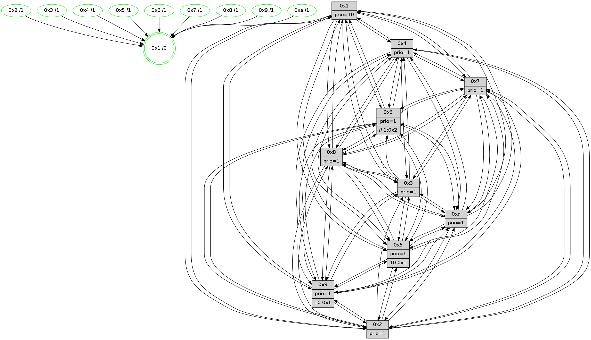

>> << IDX [start] -100 -25 -5 +0 +5 +25 +100 [1520.00509715]
 Previous packets
----------------------------------------------------------------------
1515.216328 beacon01(faad) #0 coord=01,02,03,04,05,06,07,0a,09,08 cycle=688.0ms assoc
-- color-indic=1 64 18 3e
1515.226309 beacon02(faad) #0 coord=01,02,03,04,05,06,07,0a,09,08 cycle=688.0ms assoc 64 8b 0f
1515.236309 beacon03(faad) #0 coord=01,02,03,04,05,06,07,0a,09,08 cycle=688.0ms assoc 64 f1 42
1515.246309 beacon04(faad) #0 coord=01,02,03,04,05,06,07,0a,09,08 cycle=688.0ms assoc 64 86 a8
1515.256310 beacon05(faad) #0 coord=01,02,03,04,05,06,07,0a,09,08 cycle=688.0ms assoc 64 fc e5
1515.266310 beacon06(faad) #0 coord=01,02,03,04,05,06,07,0a,09,08 cycle=688.0ms assoc 64 72 32
1515.276311 beacon07(faad) #0 coord=01,02,03,04,05,06,07,0a,09,08 cycle=688.0ms assoc 64 08 7f
1515.286315 beacon0a(faad) #0 coord=01,02,03,04,05,06,07,0a,09,08 cycle=688.0ms assoc 64 79 74
1515.306317 beacon08(faad) #0 coord=01,02,03,04,05,06,07,0a,09,08 cycle=688.0ms assoc 64 8d ee
1515.317290 [STC(7)->1 #0.269 tree-change,inconsistent-stability,stable,to-color d=1]
1515.318889 [STC(8)->1 #0.269 tree-change,inconsistent-stability,stable,to-color d=1]
1515.320809 [STC(9)->1 #0.269 tree-change,inconsistent-stability,stable,to-color d=1]
1515.322464 [Color(9) seq=509 @0:0 prio=1 >10.@1,1.@2,1.@3,1.@4]
1515.324187 [Hello(3): seq=966 sym=1,7,2,4,8,9,10,5 sysInfo=hasWarning stat=1:3,0,12,0/7:1,7,11,0/2:0,2,0,0/4:3,12,14,14/8:6,7,4,8/9:13,3,4,2/10:12,2,9,5/5:9,2,5,3]
1515.329357 [STC(6)->1 #0.269 tree-change,inconsistent-stability,stable,to-color d=1]
1515.330961 [Hello(1): seq=875 sym=4,2,9,5,10,3,8,6,7 sysInfo=coloring-mode-on,ColoringModeRequestCalled stat=4:0,9,8,4/2:15,10,15,7/9:6,7,1,3/5:10,2,7,11/10:0,11,9,8/3:10,11,6,13/8:10,5,3,6/6:2,3,4,3/7:1,9,11,3]
1515.333564 [STC(3)->1 #0.269 tree-change,inconsistent-stability,stable,to-color d=1]
1515.335674 [Hello(2): seq=962 sym=4,5,7,6,3,9,8,10,1 sysInfo=hasWarning stat=4:15,8,7,14/5:8,2,10,4/7:0,10,10,3/6:0,1,0,0/3:10,14,9,2/9:14,8,1,11/8:10,6,3,15/10:14,5,0,11/1:13,3,4,0]
1515.340077 [STC(2)->1 #0.269 tree-change,inconsistent-stability,stable,to-color d=1]
1515.342027 [Color(2) seq=542 @0:0 prio=1]
1515.343457 [Hello(5): seq=966 sym=7,6,4,3,1,9,8,10,2 sysInfo=hasWarning stat=7:10,11,12,1/6:9,1,3,0/4:5,2,3,0/3:6,5,5,3/1:3,5,3,0/9:3,3,9,12/8:14,9,2,7/10:13,13,12,9/2:8,13,2,9]
1515.346033 [Color(3) seq=595 @0:0 prio=1]
1515.347410 [Color(6) seq=598 @0:0 prio=1 >>1.@2,1.@3,1.@4]
1515.350887 [STC(5)->1 #0.269 tree-change,inconsistent-stability,stable,to-color d=1]
1515.353080 [STC(10)->1 #0.269 tree-change,inconsistent-stability,stable,to-color d=1]
1515.355030 [Color(10) seq=555 @0:0 prio=1]
1515.356511 [Color(5) seq=502 @0:0 prio=1 >10.@1,1.@2,1.@3,1.@4]
----------------------------------------------------------------------
1516.004460 beacon01(faad) #0 coord=01,02,03,04,05,06,07,0a,09,08 cycle=688.0ms assoc
-- color-indic=1 64 a4 3b
1516.014443 beacon02(faad) #0 coord=01,02,03,04,05,06,07,0a,09,08 cycle=688.0ms assoc 64 37 0a
1516.024443 beacon03(faad) #0 coord=01,02,03,04,05,06,07,0a,09,08 cycle=688.0ms assoc 64 4d 47
1516.034444 beacon04(faad) #0 coord=01,02,03,04,05,06,07,0a,09,08 cycle=688.0ms assoc 64 3a ad
1516.044443 beacon05(faad) #0 coord=01,02,03,04,05,06,07,0a,09,08 cycle=688.0ms assoc 64 40 e0
1516.054442 beacon06(faad) #0 coord=01,02,03,04,05,06,07,0a,09,08 cycle=688.0ms assoc 64 ce 37
1516.064443 beacon07(faad) #0 coord=01,02,03,04,05,06,07,0a,09,08 cycle=688.0ms assoc 64 b4 7a
1516.074446 beacon0a(faad) #0 coord=01,02,03,04,05,06,07,0a,09,08 cycle=688.0ms assoc 64 c5 71
1516.094447 beacon08(faad) #0 coord=01,02,03,04,05,06,07,0a,09,08 cycle=688.0ms assoc 64 31 eb
1516.105985 [Hello(9): seq=910 sym=2,5,3,4,7,6,8,10,1 sysInfo=hasWarning stat=2:15,15,12,13/5:2,5,4,0/3:11,5,8,7/4:9,13,4,3/7:4,6,4,5/6:13,1,9,1/8:7,5,2,8/10:14,15,5,0/1:5,15,10,1]
1516.109877 [Hello(7): seq=966 sym=2,3,5,6,8,9,10,1 sysInfo=hasWarning stat=2:10,13,6,6/3:0,6,9,6/5:1,6,8,5/6:4,3,7,13/8:5,11,1,0/9:14,6,2,3/10:8,2,15,7/1:11,2,6,0]
1516.112190 [Hello(8): seq=910 sym=5,2,3,7,9,6,4,10,1 sysInfo=hasWarning stat=5:15,9,4,3/2:6,9,15,14/3:14,11,3,6/7:2,5,2,1/9:11,13,5,6/6:6,10,1,1/4:10,1,11,2/10:3,10,11,5/1:3,2,11,0]
1516.115555 [Color(7) seq=494 @0:0 prio=1]
1516.116955 [Hello(10): seq=899 sym=6,2,3,8,7,5,9,4,1 sysInfo=hasWarning stat=6:0,15,8,5/2:0,7,10,2/3:6,15,2,15/8:2,1,14,5/7:14,11,11,10/5:4,9,4,3/9:1,7,12,2/4:15,14,8,3/1:6,7,9,1]
1516.120271 [Color(8) seq=565 @0:0 prio=1]
1516.123739 [Hello(4): seq=966 sym=5,8,6,2,3,9,7,10,1 sysInfo=hasWarning stat=5:13,6,6,4/8:11,5,1,0/6:3,1,2,2/2:5,2,9,3/3:1,12,0,1/9:14,5,10,3/7:2,4,0,0/10:4,10,2,14/1:13,11,11,1]
1516.128819 [Color(4) seq=505 @0:0 prio=1]
----------------------------------------------------------------------
1516.792592 beacon01(faad) #0 coord=01,02,03,04,05,06,07,0a,09,08 cycle=688.0ms assoc
-- color-indic=1 64 60 35
1516.802575 beacon02(faad) #0 coord=01,02,03,04,05,06,07,0a,09,08 cycle=688.0ms assoc 64 f3 04
1516.812574 beacon03(faad) #0 coord=01,02,03,04,05,06,07,0a,09,08 cycle=688.0ms assoc 64 89 49
1516.822575 beacon04(faad) #0 coord=01,02,03,04,05,06,07,0a,09,08 cycle=688.0ms assoc 64 fe a3
1516.832574 beacon05(faad) #0 coord=01,02,03,04,05,06,07,0a,09,08 cycle=688.0ms assoc 64 84 ee
1516.842576 beacon06(faad) #0 coord=01,02,03,04,05,06,07,0a,09,08 cycle=688.0ms assoc 64 0a 39
1516.852576 beacon07(faad) #0 coord=01,02,03,04,05,06,07,0a,09,08 cycle=688.0ms assoc 64 70 74
1516.862581 beacon0a(faad) #0 coord=01,02,03,04,05,06,07,0a,09,08 cycle=688.0ms assoc 64 01 7f
1516.882583 beacon08(faad) #0 coord=01,02,03,04,05,06,07,0a,09,08 cycle=688.0ms assoc 64 f5 e5
1516.895749 [Hello(1): seq=876 sym=4,2,9,5,10,3,8,6,7 sysInfo=coloring-mode-on,ColoringModeRequestCalled stat=4:0,9,8,4/2:0,11,0,7/9:7,7,1,3/5:11,3,8,11/10:0,12,10,8/3:10,12,7,13/8:10,5,3,6/6:2,4,4,3/7:1,9,11,3]
1516.898473 [Hello(3): seq=967 sym=1,7,6,4,8,9,10,5 sysInfo=hasWarning stat=1:3,1,12,0/7:2,8,12,0/6:0,1,0,0/4:4,12,14,14/8:7,8,5,8/9:14,3,5,2/10:13,3,10,5/5:9,3,6,3]
1516.901474 [Hello(2): seq=963 sym=4,5,7,6,3,9,8,10,1 sysInfo=hasWarning stat=4:0,9,7,14/5:9,3,11,4/7:1,11,11,3/6:0,2,0,0/3:10,15,9,2/9:15,8,2,11/8:11,7,4,15/10:15,6,1,11/1:13,3,4,0]
1516.904038 [Color(10) seq=556 @0:0 prio=1]
1516.905771 [Hello(5): seq=967 sym=7,6,4,3,1,9,8,10,2 sysInfo=hasWarning stat=7:11,12,13,1/6:9,1,3,0/4:6,3,3,0/3:6,5,5,3/1:3,5,3,0/9:4,3,10,12/8:15,10,3,7/10:14,13,12,9/2:8,13,2,9]
1516.908663 [Color(9) seq=510 @0:0 prio=1 >10.@1,1.@2,1.@3,1.@4]
1516.910501 [Color(2) seq=543 @0:0 prio=1]
1516.911863 [Hello(6): seq=967 sym=2,5,4,7,9,8,10,1 asym=3 sysInfo=hasWarning stat=2:12,2,3,1/5:14,1,15,6/4:0,4,7,9/7:13,12,5,1/9:4,8,9,12/8:1,1,0,9/10:5,6,2,13/1:6,5,11,1/3:7,12,9,0]
1516.915897 [Color(5) seq=503 @0:0 prio=1 >10.@1,1.@2,1.@3,1.@4]
1516.918868 [Color(3) seq=596 @0:0 prio=1]
1516.924300 [Color(6) seq=599 @0:0 prio=1 >>1.@2,1.@3,1.@4]
----------------------------------------------------------------------
1517.580723 beacon01(faad) #0 coord=01,02,03,04,05,06,07,0a,09,08 cycle=688.0ms assoc
-- color-indic=1 64 dc 30
1517.590704 beacon02(faad) #0 coord=01,02,03,04,05,06,07,0a,09,08 cycle=688.0ms assoc 64 4f 01
1517.600704 beacon03(faad) #0 coord=01,02,03,04,05,06,07,0a,09,08 cycle=688.0ms assoc 64 35 4c
1517.610705 beacon04(faad) #0 coord=01,02,03,04,05,06,07,0a,09,08 cycle=688.0ms assoc 64 42 a6
1517.620706 beacon05(faad) #0 coord=01,02,03,04,05,06,07,0a,09,08 cycle=688.0ms assoc 64 38 eb
1517.630705 beacon06(faad) #0 coord=01,02,03,04,05,06,07,0a,09,08 cycle=688.0ms assoc 64 b6 3c
1517.640707 beacon07(faad) #0 coord=01,02,03,04,05,06,07,0a,09,08 cycle=688.0ms assoc 64 cc 71
1517.650711 beacon0a(faad) #0 coord=01,02,03,04,05,06,07,0a,09,08 cycle=688.0ms assoc 64 bd 7a
1517.670711 beacon08(faad) #0 coord=01,02,03,04,05,06,07,0a,09,08 cycle=688.0ms assoc 64 49 e0
1517.683504 [Hello(10): seq=900 sym=6,2,3,8,7,5,9,4,1 sysInfo=hasWarning stat=6:1,0,8,5/2:0,8,10,2/3:6,0,2,15/8:2,2,14,5/7:14,11,11,10/5:5,10,4,3/9:1,8,12,2/4:0,14,8,3/1:7,8,9,1]
1517.686548 [Hello(7): seq=967 sym=2,3,5,6,8,4,9,10,1 sysInfo=hasWarning stat=2:11,14,6,6/3:1,7,9,6/5:2,7,8,5/6:5,4,7,13/8:6,12,1,0/4:0,0,0,0/9:15,7,2,3/10:9,3,15,7/1:12,3,6,0]
1517.689395 [Color(7) seq=495 @0:0 prio=1]
1517.693855 [Hello(8): seq=911 sym=5,2,3,7,9,6,4,10,1 sysInfo=hasWarning stat=5:0,10,4,3/2:7,10,15,14/3:15,12,3,6/7:2,5,2,1/9:12,14,5,6/6:7,11,1,1/4:11,1,11,2/10:3,11,11,5/1:4,3,11,0]
1517.697309 [Color(8) seq=566 @0:0 prio=1]
1517.707849 [Hello(4): seq=967 sym=5,8,6,2,3,9,7,10,1 sysInfo=hasWarning stat=5:14,7,6,4/8:11,5,1,0/6:4,2,2,2/2:6,3,9,3/3:2,13,0,1/9:15,6,10,3/7:2,4,0,0/10:4,11,2,14/1:14,11,11,1]
1517.710681 [Color(4) seq=506 @0:0 prio=1]
----------------------------------------------------------------------
1518.368853 beacon01(faad) #0 coord=01,02,03,04,05,06,07,0a,09,08 cycle=688.0ms assoc
-- color-indic=1 64 08 05
1518.378835 beacon02(faad) #0 coord=01,02,03,04,05,06,07,0a,09,08 cycle=688.0ms assoc 64 9b 34
1518.388836 beacon03(faad) #0 coord=01,02,03,04,05,06,07,0a,09,08 cycle=688.0ms assoc 64 e1 79
1518.398836 beacon04(faad) #0 coord=01,02,03,04,05,06,07,0a,09,08 cycle=688.0ms assoc 64 96 93
1518.408836 beacon05(faad) #0 coord=01,02,03,04,05,06,07,0a,09,08 cycle=688.0ms assoc 64 ec de
1518.418836 beacon06(faad) #0 coord=01,02,03,04,05,06,07,0a,09,08 cycle=688.0ms assoc 64 62 09
1518.428837 beacon07(faad) #0 coord=01,02,03,04,05,06,07,0a,09,08 cycle=688.0ms assoc 64 18 44
1518.438841 beacon0a(faad) #0 coord=01,02,03,04,05,06,07,0a,09,08 cycle=688.0ms assoc 64 69 4f
1518.458841 beacon08(faad) #0 coord=01,02,03,04,05,06,07,0a,09,08 cycle=688.0ms assoc 64 9d d5
1518.471321 [Hello(1): seq=877 sym=4,2,9,5,10,3,8,6,7 sysInfo=coloring-mode-on,ColoringModeRequestCalled stat=4:1,10,8,4/2:1,12,0,7/9:7,8,1,3/5:12,4,8,11/10:1,13,10,8/3:11,13,7,13/8:11,6,3,6/6:3,5,4,3/7:1,10,11,3]
1518.474687 [Color(10) seq=557 @0:0 prio=1]
1518.476274 [Hello(5): seq=968 sym=7,6,4,3,1,9,8,10,2 sysInfo=hasWarning stat=7:12,13,13,1/6:9,2,3,0/4:7,4,3,0/3:6,6,5,3/1:4,5,3,0/9:4,3,10,12/8:0,11,3,7/10:14,13,12,9/2:8,13,2,9]
1518.479089 [Color(5) seq=504 @0:0 prio=1 >10.@1,1.@2,1.@3,1.@4]
1518.481587 [Hello(2): seq=964 sym=4,5,7,6,3,9,8,10,1 sysInfo=hasWarning stat=4:1,10,7,14/5:9,4,11,4/7:2,12,11,3/6:1,3,0,0/3:10,0,9,2/9:15,8,2,11/8:12,8,4,15/10:15,6,1,11/1:14,3,4,0]
1518.484541 [Color(9) seq=511 @0:0 prio=1 >10.@1,1.@2,1.@3,1.@4]
1518.487388 [Hello(3): seq=968 sym=1,7,6,4,8,9,10,5 sysInfo=hasWarning stat=1:4,2,12,0/7:2,9,12,0/6:0,2,0,0/4:5,13,14,14/8:8,9,5,8/9:14,3,5,2/10:14,3,10,5/5:9,3,6,3]
1518.489993 [Color(2) seq=544 @0:0 prio=1]
1518.492306 [Color(3) seq=597 @0:0 prio=1]
1518.495145 [STC(1) #0.270 tree-change,inconsistent-stability,stable,to-color d=0]
1518.496426 [Hello(6): seq=968 sym=2,5,4,7,9,8,10,1 asym=3 sysInfo=hasWarning stat=2:12,2,3,1/5:14,1,15,6/4:1,5,7,9/7:14,13,5,1/9:4,8,9,12/8:2,2,0,9/10:6,6,2,13/1:7,5,11,1/3:7,12,9,0]
1518.500891 [Color(6) seq=600 @0:0 prio=1 >>1.@2,1.@3,1.@4]
----------------------------------------------------------------------
1519.156984 beacon01(faad) #0 coord=01,02,03,04,05,06,07,0a,09,08 cycle=688.0ms assoc
-- color-indic=1 64 b4 00
1519.166966 beacon02(faad) #0 coord=01,02,03,04,05,06,07,0a,09,08 cycle=688.0ms assoc 64 27 31
1519.176967 beacon03(faad) #0 coord=01,02,03,04,05,06,07,0a,09,08 cycle=688.0ms assoc 64 5d 7c
1519.186966 beacon04(faad) #0 coord=01,02,03,04,05,06,07,0a,09,08 cycle=688.0ms assoc 64 2a 96
1519.196966 beacon05(faad) #0 coord=01,02,03,04,05,06,07,0a,09,08 cycle=688.0ms assoc 64 50 db
1519.206966 beacon06(faad) #0 coord=01,02,03,04,05,06,07,0a,09,08 cycle=688.0ms assoc 64 de 0c
1519.216968 beacon07(faad) #0 coord=01,02,03,04,05,06,07,0a,09,08 cycle=688.0ms assoc 64 a4 41
1519.226971 beacon0a(faad) #0 coord=01,02,03,04,05,06,07,0a,09,08 cycle=688.0ms assoc 64 d5 4a
1519.246972 beacon08(faad) #0 coord=01,02,03,04,05,06,07,0a,09,08 cycle=688.0ms assoc 64 21 d0
1519.258586 [STC(3)->1 #0.270 tree-change,inconsistent-stability,stable,to-color d=1]
1519.260669 [Hello(10): seq=901 sym=6,2,3,8,7,5,9,4,1 sysInfo=hasWarning stat=6:2,1,8,5/2:1,9,10,2/3:7,1,2,15/8:3,3,14,5/7:15,12,11,10/5:6,11,4,3/9:1,9,12,2/4:1,15,8,3/1:8,8,10,1]
1519.263371 [Hello(9): seq=912 sym=2,5,3,4,7,6,8,10,1 sysInfo=hasWarning stat=2:15,1,12,13/5:2,6,4,0/3:12,7,8,7/4:11,15,4,3/7:5,8,4,5/6:15,3,9,1/8:9,7,2,8/10:15,15,5,0/1:7,15,11,1]
1519.266194 [STC(9)->1 #0.270 tree-change,inconsistent-stability,stable,to-color d=1]
1519.267596 [STC(5)->1 #0.270 tree-change,inconsistent-stability,stable,to-color d=1]
1519.269507 [STC(10)->1 #0.270 tree-change,inconsistent-stability,stable,to-color d=1]
1519.271652 [STC(2)->1 #0.270 tree-change,inconsistent-stability,stable,to-color d=1]
1519.274356 [Hello(4): seq=968 sym=5,8,6,2,3,9,7,10,1 sysInfo=hasWarning stat=5:15,8,6,4/8:11,5,1,0/6:5,3,2,2/2:7,4,9,3/3:3,14,0,1/9:15,7,10,3/7:2,4,0,0/10:4,12,2,14/1:15,11,12,1]
1519.277089 [Color(1) seq=648 @0:0 prio=10]
1519.278379 [Hello(8): seq=912 sym=5,2,3,7,9,6,4,10,1 sysInfo=hasWarning stat=5:1,11,4,3/2:8,11,15,14/3:0,13,3,6/7:2,5,2,1/9:12,15,5,6/6:8,12,1,1/4:12,2,11,2/10:4,12,11,5/1:5,3,12,0]
1519.281832 [STC(8)->1 #0.270 tree-change,inconsistent-stability,stable,to-color d=1]
1519.284582 [Hello(7): seq=968 sym=2,3,5,6,8,4,9,10,1 sysInfo=hasWarning stat=2:12,15,6,6/3:2,8,9,6/5:3,8,8,5/6:6,5,7,13/8:7,13,1,0/4:1,1,0,0/9:15,8,2,3/10:10,4,15,7/1:13,3,7,0]
1519.287412 [STC(7)->1 #0.270 tree-change,inconsistent-stability,stable,to-color d=1]
1519.289696 [Color(7) seq=496 @0:0 prio=1]
1519.291968 [STC(4)->1 #0.270 tree-change,inconsistent-stability,stable,to-color d=1]
1519.293334 [TreeStatus(8)-.->1 #0.270 tree-change,inconsistent-stability,stable child=1]
1519.294841 [Color(8) seq=567 @0:0 prio=1]
1519.297907 [Color(4) seq=507 @0:0 prio=1]
----------------------------------------------------------------------
1519.945114 beacon01(faad) #0 coord=01,02,03,04,05,06,07,0a,09,08 cycle=688.0ms assoc
-- color-indic=1 64 70 0e
1519.955097 beacon02(faad) #0 coord=01,02,03,04,05,06,07,0a,09,08 cycle=688.0ms assoc 64 e3 3f
1519.965096 beacon03(faad) #0 coord=01,02,03,04,05,06,07,0a,09,08 cycle=688.0ms assoc 64 99 72
1519.975097 beacon04(faad) #0 coord=01,02,03,04,05,06,07,0a,09,08 cycle=688.0ms assoc 64 ee 98
1519.985097 beacon05(faad) #0 coord=01,02,03,04,05,06,07,0a,09,08 cycle=688.0ms assoc 64 94 d5
1519.995096 beacon06(faad) #0 coord=01,02,03,04,05,06,07,0a,09,08 cycle=688.0ms assoc 64 1a 02